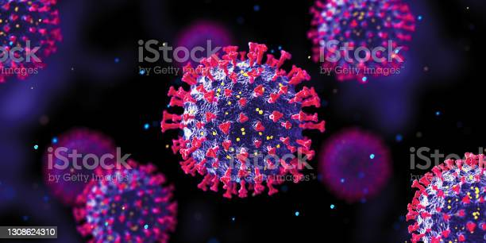

- 뉴스
- 출처
- 네이버
“코로나19" 백신 접종 후 10대 사망신고 추가”…누적 5건
신종 코로나바이러스 감염증(코로나19) 백신을 접종받은 10대 청소년 1명이 사망했다.
질병관리청 코로나19 예방접종대응추진단은 27일 오후 정례브리핑에서 “지난 20일 10대
청소년이 백신 이상반응으로 사망했다는 신고사례가 접수됐다”고 전했다.
당국은 성별과 접종한 백신 종류, 1·2차 접종일, 사망일 등 구체적인 내용은 밝히지 않았다.
다만 “백신 접종과 사망신고 간의 인과관계는 밝혀지지 않은 상황”이라며 “현재는
지자체의 신고 현황을 신속, 투명하게 공개한 단계”라고 했다. 그러면서 “지자체 신속
대응팀에서 역학조사를 진행하고 피해조사반으로 (인과 관계 등) 정보가 오면 확인해
설명하겠다”고 했다.
현재까지 10대 연령층에서 코로나19 백신을 접종한 뒤 사망했다고 신고한 사례는
누적 5명이다. 5명 모두 2차 접종을 마쳤다. 연령별로 보면 19세와 18세가
각 2명, 16세가 1명이다.